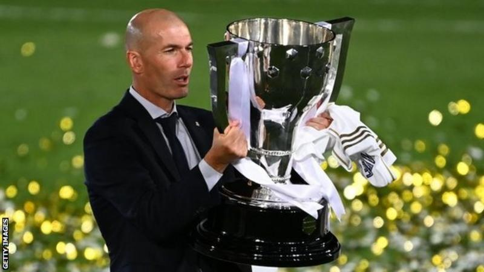
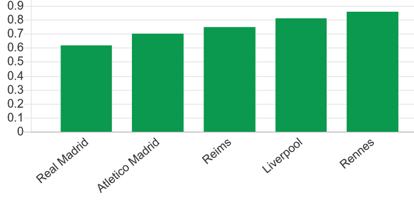

global football news
How Real Madrid and Zinedine Zidane won back La Liga

Real Madrid have been crowned Spanish champions after a 2-1 victory over Villarreal on Thursday night, taking the title with a run of 10 consecutive victories since action restarted last month.
It has been an impressive turnaround for Zinedine Zidane's team, who finished 19 points behind Barcelona last season with virtually the same squad.
And the title triumph represents a new era for Los Blancos, who have become a very different team - for the better - since Zidane returned for his second tenure at the Bernabeu last March.
Here's how they did it.
Zizou masterminds defensive transformation

Zidane has always been hailed for his man-management abilities, with his regal aura allowing him to command respect and instil unity.
In the past, though, it was regularly suggested that the Frenchman was tactically weak, broadly limiting his strategy to sending out his best players and trusting them to find their own solutions.
That resulted in an inconsistent team, capable of turning on the style often enough to win three consecutive Champions League crowns but unable to withstand the game-by-game rigours of an arduous league campaign.
Best defences in Europe's 'top five leagues'
After finishing miles behind Barcelona in the past two title races, though, Zidane identified his team's weaknesses and rectified them.
Essentially, Real have become far more compact, leaving less space for opponents to exploit and working together with a collective determination to protect their goal. In contrast to the cavalier style of recent years, which always left them vulnerable, they are now perfectly balanced and very difficult to score against.
As a result, they boast the best defensive record in La Liga, having conceded just 23 goals in 37 league games - almost halving the number of goals they allowed in the previous two campaigns (46 last season, 44 in 2017-18).
That has been achieved partly through excellent individual performances: Ferland Mendy has added greater defensive awareness at left-back; Raphael Varane has enjoyed the best season of his career; Thibaut Courtois is back to his best in goal; Sergio Ramos remains a ferociously competitive leader, and nobody protects a back four better than defensive midfielder Casemiro.
Far more important than individual form, though, is the collective mindset and tactical discipline instilled by Zidane throughout the team. This title, without doubt, has been built on defensive foundations.
Goals from everywhere
The team ethic is also reflected in the list of goalscorers, with 21 different players getting on the scoresheet over the league campaign - something never previously seen in La Liga.
Back-up defender Eder Militao and rarely used winger Brahim Diaz are the only outfield players who haven't scored.
In a way, this reflects badly on the team's forwards, none of whom have mustered more than three league goals except Karim Benzema. The second-highest scorer is captain Ramos, who has netted six of his 10 goals from the penalty spot, followed by midfielders Toni Kroos and Casemiro with four apiece.
But that has not mattered because, in the same way that everyone has been responsible for the defensive improvement rather than just the back four, Zidane encourages every player to get themselves into scoring positions.
That also points to Zidane's willingness to trust his full squad. Every available player - even the unwanted Gareth Bale and James Rodriguez - has started at least one game since last month's restart, and Zidane's ability to make every player feel needed and important (well, nearly every player) remains unmatched.
Brilliant Benzema

"Only Lionel Messi has scored more La Liga goals than Karim Benzema this season"
One forward who hasn't disappointed in the scoring stakes is Benzema, who has been consistently outstanding to produce 21 goals and eight assists.
More than those numbers, though, Benzema is so valuable for his elegant and unselfish link-up play. In addition to leading the line, he regularly drops into midfield or drifts to the left wing to combine with his team-mates, who appreciate enormously his ability to find space and maintain possession.
Benzema has undoubtedly benefited from the departure of Cristiano Ronaldo, now being able to serve as the focal point of the team's attacking play rather than being chiefly expected to service the Portuguese star.
He has more than doubled his goals tally since Ronaldo joined Juventus, netting 42 league goals in the past two seasons, compared with 16 in the previous two.
Benzema makes his team-mates better and his growing understanding with Eden Hazard has been particularly delightful to watch, while young Brazilian wingers Vinicius Jr and Rodrygo are also blossoming under his guidance.
Crucially, he has also stayed fit enough to play more minutes than any other outfield player. Along with Casemiro, he is the only member of the squad who doesn't have a natural replacement.
A bright future?

Even better news for Real Madrid fans is that the future looks bright.
Although Ramos (34), Modric (34) and Benzema (32) are in the latter stages of their careers, the bulk of the squad is deep and relatively young and players like Vinicius, Rodrygo, Mendy and Fede Valverde should only get better.
The club also has an impressive array of talented youngsters out on loan, including creative midfielder Martin Odegaard (Real Sociedad), dazzling winger Take Kubo (Mallorca) and hard-charging left-back Sergio Reguilon (Sevilla).
Offloading Bale and James, if anyone is prepared to meet their wage demands, would raise the necessary funds to add depth in midfield and recruit a long-term replacement for Benzema, with fellow Frenchman Kylian Mbappe still the preferred choice for that role.
The next immediate task of overturning a Champions League deficit against Manchester City might prove beyond them, especially with inspirational captain Ramos suspended, but the progress made by Zidane's team in this triumphant season suggests Barcelona's days of dominance in Spain are over.